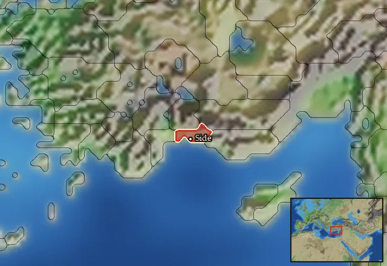

Pamphylian Hoplites


Class: spearmen · Category: infantry · Men per unit: 40
Description
Armed with round aspis shields, spears, and straight xiphos swords, these men are your typical hoplites. They are well protected with linothorakes and helmets of the Pilos, Thracian, and Phrygian types. Most of them wear red, short-sleeved tunics combined with greaves. Recruited from among the Greeks on the Pamphylian coast as well as some natives from the interior, these Pamphylian Hoplites are a motley crew, but few can match their experience and discipline.
Historical background
Pamphylia, the central region on the southern coast of Asia Minor, was populated by a mixture of aboriginal inhabitants, Greeks, and Cilicians. Boxed in by mountains on all sides, the majority of the region is a fertile plain of 200 kilometres (124 miles) from west to east and 50 kilometres deep, containing the main cities of Aspendos, Perge, Side, and Sillyon. When Pergamon obtained control of the area after the Treaty of Apamea, they (re)founded the city of Attaleia in honour of Attalos II of Pergamon around 150 BC. This city would flourish through the ages to eventually become modern Antalya (Kaye, In Search of Ancient Antalya (Attaleia), in: Adalya (2024), p. 214).
The fertile plain of Pamphylia contains many rivers, among them the Eurymedon and Kestros. It was settled by Greeks somewhere between 1190 and 800 BC. The Greeks who ended up living there, however, linked themselves directly to the Trojan seers Amphilochos, Kalchas, and Mopsos (Grainger, The Cities of Pamphylia (2009), p.7). These first colonists made their home among the local Luwian clans. The second wave arrived in the 7th century BC. At that time, the harbour of Side was probably already in use by the locals. They welcomed a small number of traders from the Aeolian city of Kyme (Grainger (2009), p. 18). Lakios of Lindos from the island of Rhodes led a third expedition around 690 BC that founded a rival port by the name of Phaeselis. The cities of Aspendos, Perge, and Sillyon were founded further inland not much later. These were prime defensive sites on top of hills, as the threat of Phrygians, Assyrians, and Cimmerians became a pressing issue. The shield motifs on the large aspis shields held by this unit are based on coins from these three cities. As RIS, we decided not to use the motifs of Side for this unit, since that city was a rival to the cities of Aspendos and Perge and its citizens would never have fought together in a single unit (Grainger (2009), p. 188).
Pamphylia means ‘all tribes’ and implies a land inhabited by a variety of peoples (Grainger (2009), p.1). The variety and relative calmness of the area did, however, not result in enormous population numbers. As the whole population of Pamphylia maxed out at 250,000 – slightly less than the whole population of Athens at its height – the choice to rely on well-armed hoplites seems logical from a Greek point of view (Grainger (2009), p. 40). It is noteworthy that the cities of Aspendos, Perge, and Silyon were probably established in 665 BC as a planned scheme to decentralise power (Grainger (2009), p. 39).
The use of Pamphylian hoplites is attested during the Diadochi wars. Antigonos I Monophthalmos recruited 3,000 hoplites from Lykia and Pamphylia. They are specifically mentioned for not using the longer Macedonian sarissa pike (Diodoros XIX.29.3). This force fought without distinction at the Battle of Paraitakene in 317 BC, as they were deployed in the centre-left of the line, and faced the veteran silver shields of Eumenes, who easily routed them. At the Battle of Gabiene the following year, the Pamhylians actually held the line against Eumenes’ mercenaries, a more reasonable opponent. The fact they are mentioned separately, makes the case that they were close to Antigonos. He was, after all, the longtime governor of Anatolia just north of Pamphylia (Bennet and Roberts, The Wars of Alexander’s Successors vol. 2 (2009), p. 93).
The son of Antigonos, Demetrios, had around 500 Pamphylians in his army at the Battle of Gaza in 312 BC (Devine, ‘Diodorus’ Account of the Battle of Gaza’, in: Acta Classica 27 (1984), p. 34). Demetrios handled the opening moves of this battle so disastrously that a rout ensued. The Pamphylians probably defected to Ptolemy along with most of the other infantry. Between 309 and 306 BC, parts of Pamphylia itself became part of the Ptolemaic Empire, and it is reasonable to assume that those hoplites were stationed there. In 302 BC, they are mentioned again, when a group of 800 soldiers deserted from Lysimachos to Antigonos due to the loss of the baggage train. Grainger finds it is reasonable to assume that this was the same group, which by then had become diminished in numbers. The deserters were subsequently defeated in the Battle of Ipsos (Grainger 2009, p.78).
Aside from their participation in the Diadochi Wars, the Pamphylians did not shy away from fighting among themselves. Phaselis fought the inland Solymoi. The Aspendians took over some land of Side and later provided 4,000 hoplites to the Seleucid general besieging Selge (Grainger (2009), p. 121). Their rivals, the Sideans, refused to fight alongside them (Polybios, V.73.2).
It is noteworthy that Pamphylians participated on the Seleucid side at the Battle of Magnesia (190 BC). Not as hoplites, but as light infantry. Perhaps the loyalty of the Pamphylian cities could not be trusted, or their fighting style had become totally obsolete when facing the Romans. In any case, these light troops were easily overrun by the Roman cavalry (Grainger (2009), p. 125). Over the following years, Seleucid control of Pamphylia was greatly reduced while Pergamon moved in. Finally, in 129 BC, the Kingdom of Pergamon was incorporated into the Roman Republic.
Stats
| Rank in roster | ||
|---|---|---|
| Men per unit | 40 | ███······· 30% |
| Attack | 10 | ██········ 20% |
| Charge bonus | 15 | ██████···· 60% |
| Defence | 39 | ███████··· 70% |
| · armour | 10 | █████····· 54% |
| · defence skill | 24 | ███████··· 69% |
| · shield | 5 | ██████···· 57% |
| Morale | 11 | ████······ 39% |
| Discipline | Normal | |
| Training | Highly trained | |
| Recruitment cost | 1,750 dn | ███······· 34% |
| Upkeep per turn | 640 dn | █████····· 51% |
| Turns to recruit | 2 |
Weapons
| Primary | Secondary | Primary | Secondary | Primary | Secondary | Primary | Secondary | ||||
|---|---|---|---|---|---|---|---|---|---|---|---|
| Attack | 10 | — | Type | melee · blade | — | Damage | piercing | — | Properties | Light spear (braced against cavalry charges from the front) · +8 attack against cavalry | — |
| Charge bonus | 15 | — |
Defence
| Primary | Secondary | Primary | Secondary | Primary | Secondary | Primary | Secondary | ||||
|---|---|---|---|---|---|---|---|---|---|---|---|
| Total | 39 | — | Armour | 10 | — | Defence skill | 24 | — | Shield | 5 | — |
Condition and terrain
| Hit points | 1 | Ground: scrub / sand / forest / snow | -1 / -1 / -4 / -1 | Charge distance | 30 | Formations | Square |
Technical stats
| Time between blows (primary / secondary) | 2.5 s / — | Collision mass per man (1.0 is normal) | 1.12 | Spacing between men: close / loose | 1 × 1.05 m / 2 × 2.4 m | Default ranks | 5 |
| Extra fatigue in hot climates | 1 |
In battle: Can sap · Very good stamina
Who can recruit it
No faction has this on its core roster: it can be raised only in the provinces below.
Any faction holding one of the provinces below can field it.
Exactly what a settlement must have, route by route (1)
| For | Building | Also requires | |||||||||
|---|---|---|---|---|---|---|---|---|---|---|---|
| Every faction | Any settlement | Garrison Building or Tier 1 Military Industrial Complex · Pamphylian area of recruitment · Any Government (Dependency, Indirect Rule or Direct Rule) · Tier 2 Colony not built |
Areas of recruitment

| Zone | Provinces | ||||||
|---|---|---|---|---|---|---|---|
| Pamphylian | 1 |